XEdu的安装和下载
可选的安装方式
为了满足广大中小学师生的需求，XEdu安装方式分为一键安装包安装、pip安装和docker安装。一键安装包版包含MMEdu、BaseML、BaseNN三个模块的基础功能，以及XEduHub、BaseDT、BaseDeploy等工具库，同时内置了一套EasyDL系列工具，分”EasyTrain.bat”、”EasyInference.bat”和”EasyAPI.bat”这三个可视化工具，定期更新。pip安装方式需用户自己分模块安装，各模块更新同步工具开发进度。此外，还推出了docker容器镜像可供选择。
初学者安装强推!!!不会让人失望的一键安装包
即刻体验XEdu一键安装包（CPU版本），开始！
下载工具：XEdu一键安装包
下载方式
飞书网盘：XEdu v1.6.7d.exe
下载最新版exe，同时建议准备win10电脑。
第一步：双击运行，将自解压为XEdu文件夹（注意！避免踩坑推荐安装到纯英文路径下）。
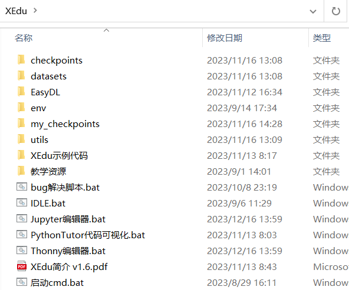
第二步：您可以根据个人喜好，选择自己习惯的IDE。
1）使用XEdu自带的Thonny。
Thonny是一款好用的Python轻量级IDE。其最突出的两个特点便是是简洁性和交互性。打开根目录下的”Thonny编辑器.bat”文件快捷方式即可打开Thonny。使用Thonny打开”demo”文件夹中的py文件，如”MMEdu_cls_demo.py”，点击”运行”的”将文件作为脚本运行”即可运行代码，界面如下图所示。
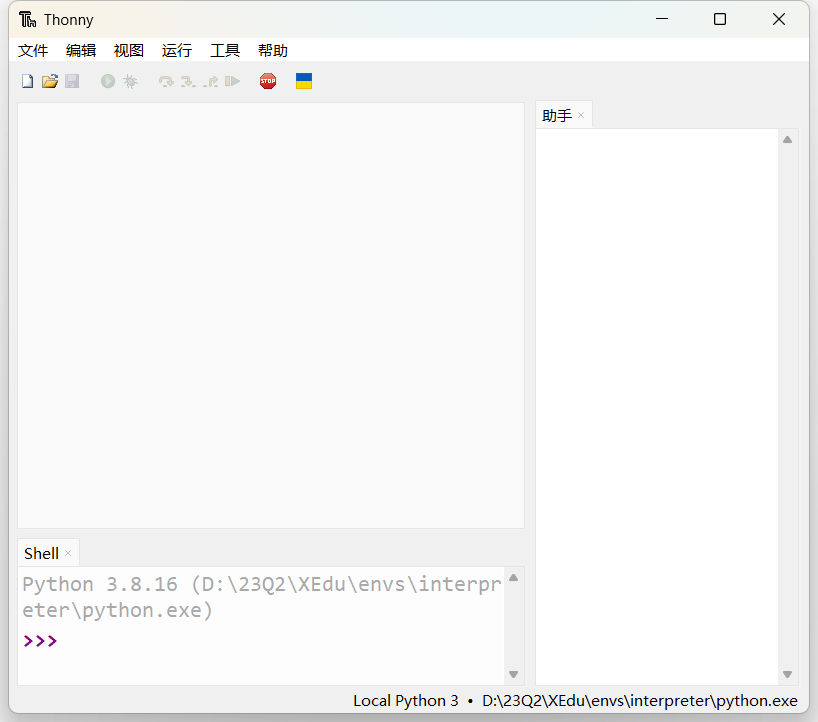
2）使用XEdu自带的Jupyter。
Jupyter Notebook是基于网页的用于交互计算的应用程序。其可被应用于全过程计算：开发、文档编写、运行代码和展示结果。它相对简单，对用户也更加友好，适合初学者。
打开根目录下的”jupyter编辑器.bat”，即自动启动浏览器并显示界面，如下图所示。

使用常用工具栏对代码进行操作，如”运行”，可以在单元格中编写文本或者代码，执行代码的结果也将会在每个单元下方呈现。可以逐个运行单元格，每点击一次，仅运行一个单元格。单元格左侧[*]内的星号变为数字，表示该单元格运行完成。此时可打开”demo”文件夹中的ipynb文件，如”MMEdu_cls_notebook.ipynb”。
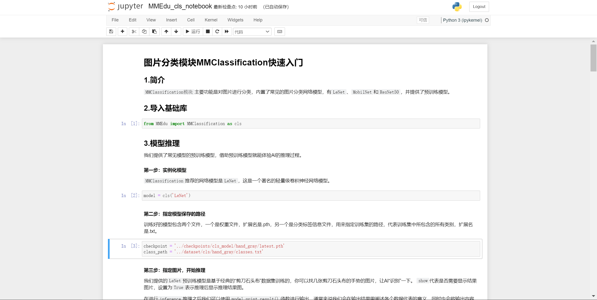
3）使用cmd安装用户库。
python中最常用的库管理工具pip，可以使用cmd命令行来运行，打开根目录下的”启动cmd.bat”可以打开cmd命令行界面，如下图所示。

在其中输入想要安装的库文件即可，如”pip install rarfile”。
4）使用其他IDE。
如果您需要使用其他IDE，那么需要您自己配置Python编译器，配置方法如下。
配置环境路径
①打开您的IDE，如PyCharm、Thonny等。
②配置Python编译器，路径为解压路径下的”envs”文件夹下的”interpreter”文件夹中的”python.exe”文件。
执行demo文件
用IDE打开解压路径下的py文件，如”cls_demo.py”，点击”运行”。运行效果应和Thonny一样。
第四步：EasyDL系列体验。
XEdu一键安装包内置了一套EasyDL系列工具，分”EasyTrain.bat”、”EasyInference.bat”、”EasyConvert.bat”和”EasyAPI.bat”这四个可视化工具。
进入EasyDL文件夹，双击即可体验，体验时操作根据界面完成即可。
①双击”EasyTrain.bat”，根据界面完成训练；EasyTrain提供了MMEdu和BaseNN模型的训练流程。
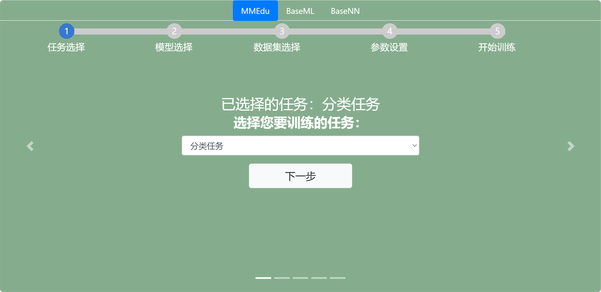
②双击”EasyInference.bat”，根据界面完成推理；

③双击”EasyConvert.bat”，根据界面完成模型转换。
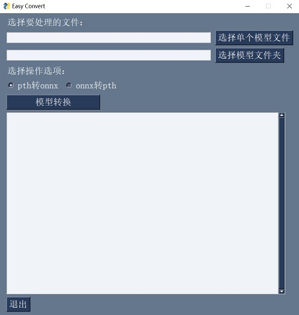
④双击”EasyAPI.bat”，根据界面完成服务部署。

更多EasyDL系列工具详见EasyDL系列无代码工具。
揭秘一键安装包功能
XEdu一键安装版是一个压缩包，解压后即可使用。
XEdu的根目录结构如下：
XEdu
├── checkpoints
├── datasets
├── EasyDL
├── envs
├── utils
├── XEdu示例代码
├── 教学资源
├── bug解决脚本.bat
├── jupyter编辑器.bat
├── IDLE.bat
├── jupyter编辑器.bat
├── PythonTutor代码可视化.bat
├── Thonny编辑器.bat
├── XEdu简介 v1.6.pdf
├── 启动cmd.bat
接下来对每层子目录进行介绍。
checkpoints目录：
存放各个模块的预训练模型的权重文件，分别放在以模块名称命名的文件夹下，如”cls_model”。
datasets目录：
存放为各个模块任务准备的数据集，分别放在以模块名称命名的文件夹下，如”cls”。同时提供了部分数据集的说明文档，如”添加猫狗数据集.txt”，文档提供了数据集下载链接、使用说明、添加数据集流程等。
envs目录：
存放XEdu各模块运行所需的环境和中小学课程常用的库。
utils目录：
存放EasyDL系列功能的源码。
XEdu示例代码目录：
存放各个模块的测试程序，如”cls_demo.py”，并提供了测试图片。测试程序包括py文件和ipynb文件，可支持各种”Python
IDE”和”jupyter notebook”运行，可运行根目录的”Thonny编辑器.bat”和”jupyter编辑器.bat”等后打开测试程序。
EasyDL
存放可视化工具。
几个bat文件
内置特色功能软件。双击打开运行后使用，包括Python编辑器和cmd启动。
XEdu简介 v1.6.pdf：
XEdu一键安装包说明文档。
拓展：windows一键安装包升级GPU版本（如硬件符合要求）
准备工作：确认是否有cuda
确认您的windows电脑有gpu算力，同时配置了cuda。建议提前检查自己的CUDA和显卡驱动版本，可以在cmd或terminal中，输入nvidia-smi命令检查（我们推荐的CUDA版本是10.1)。
步骤1：卸载CPU版本库
打开一键安装包根目录的启动cmd.bat，输入
pip uninstall torch torchvision mmcv-full -y
步骤2：安装GPU版本的对应库
安装torch：
pip install torch==1.8.1+cu101 torchvision==0.9.1+cu101 torchaudio==0.8.1 -f https://download.pytorch.org/whl/torch_stable.html
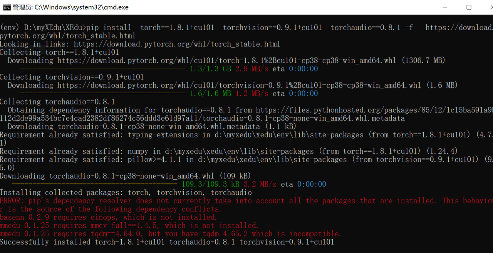
注：如果安装速度太慢，可以部分选择国内镜像源，指令如下
pip install torch==1.8.1+cu101 torchvision==0.9.1+cu101 torchaudio==0.8.1 -f https://download.pytorch.org/whl/torch_stable.html -i https://pypi.douban.com/simple
安装mmcv-full：
接着，我们重新安装mmcv-full。（预编译版本可以在这里找到：https://download.openmmlab.com/mmcv/dist/{cu_version}/{torch_version}/index.html）
如严格遵循了前面的步骤操作，此步可直接输入：
pip install mmcv-full==1.4.5 -f https://download.openmmlab.com/mmcv/dist/cu101/torch1.8.0/index.html
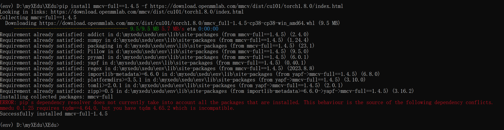
步骤3：确认是否正确启动cuda训练
至此，已完成了MMEdu（GPU版）的升级，可以将train中的device参数赋值为’cuda’，试试速度有没有相较CPU版本有显著提升。
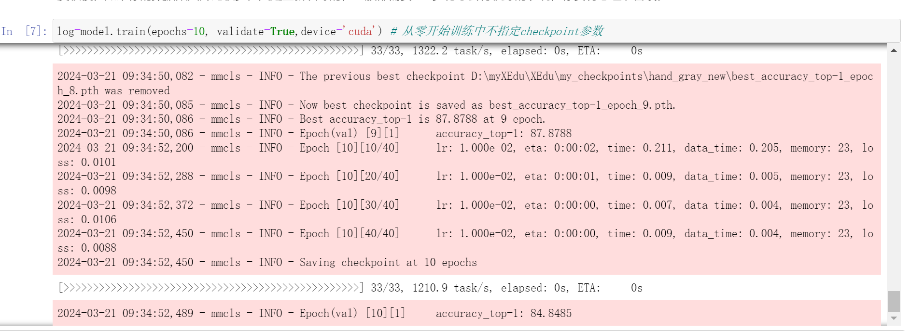
使用pip安装
XEdu的MMEdu、BaseML、BaseNN等各模块库均已支持pip安装并会持续迭代。
0.准备工作
强烈推荐你在Anaconda的基础上安装XEdu环境，可以避免很多的版本冲突问题。
1）安装Anaconda
若您已经安装好conda，该步骤可跳过。
下载
首先打开Anaconda官网：https://www.anaconda.com/
点击Download开始下载，下载完成后得到exe文件。
安装
双击exe文件即可开始安装（一般下载完成后会自动打开安装界面无需点击exe文件，若没有自动打开安装页面再点击此exe文件）。
打开安装界面后，依次选择Next -> I Agree -> All Users -> Next
-> Next -> Add Anaconda3 to the system PATH environment variable
-> Install -> Next -> Next -> Finish
2）安装python编辑器
若您已经安装好合适的python编辑器，该步骤可跳过。
此处以安装Thonny为例，其他编辑器例如Pycharm，VScode等也支持，用户自行配置好Python编译器即可。
下载
首先打开Thonny官网：https://thonny.org/
右上角选择合适的操作系统点击下载，此处以windows为例
安装
双击exe文件即可开始安装（一般下载完成后会自动打开安装界面无需点击exe文件，若没有自动打开安装页面再点击此exe文件）
打开安装界面后，依次选择Install for me only -> Next -> Next ->
Next -> Next -> Next -> Install -> Finish
运行
在安装好Thonny之后，在第一次运行的时候，会提示选择界面语言和初始设置，选择’Standard’模式即可。
配置Thonny的Python解释器
点击Thonny主界面右下角的Python版本号，可以选择对应的Python解释器，第一次配置点击Configure inter preter，弹出的窗口中，第一个下拉栏选择可选的python3解释器或虚拟环境，
第二个下拉栏找到自己之前安装的anaconda环境中的python解释器位置。点击确认即可使用该python解释器。
1.pip安装MMEdu
1.1 安装MMEdu(CPU版本)
1）Linux安装MMEdu
点击鼠标右键，打开终端。
终端中输入pip install MMEdu即可安装。
$ pip install MMEdu
注！！！为避免出现版本冲突，建议新建一个conda环境，并在新环境中执行以上命令（注：要求python<3.9）。
$ conda create -n your_env_name python=3.8
$ conda activate your_env_name
$ pip install MMEdu
注：请将命令中的”your_env_name”换成你喜欢的名称，如”mmedu”。
2）Windows安装MMEdu
同时按下win+r，输入cmd，回车，打开一个命令行窗口，激活虚拟环境。
在命令行中使用pip安装即可。
$ pip install MMEdu -f https://download.openmmlab.com/mmcv/dist/cpu/torch1.8.0/index.html
注！！！为避免出现版本冲突，建议新建一个conda环境，并在新环境中执行以上命令（注：要求python<3.9）。
$ conda create -n your_env_name python=3.8
$ conda activate your_env_name
$ pip install MMEdu -f https://download.openmmlab.com/mmcv/dist/cpu/torch1.8.0/index.html
如使用MMEdu的MMDet模块出现问题，可见后文关于pip安装MMEdu的详细说明。
1.2 安装MMEdu(GPU版本)
准备工作：确认是否有cuda
打开命令行，输入nvidia-smi，输出如下：
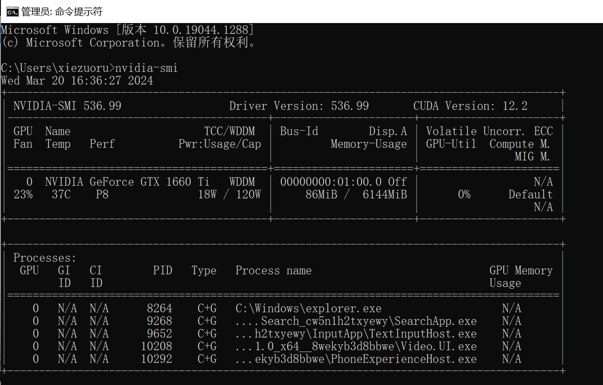
步骤1：创建一个新的虚拟环境
在准备工作中已完成Anaconda安装，此时可创建一个新的虚拟环境。
conda create -n xedu python=3.8
步骤2：安装torch+101等
在刚才的python环境中，输入下面的指令进行全部库和工具的安装：
pip install torch==1.8.1+cu101 torchvision==0.9.1+cu101 torchaudio==0.8.1 -f https://download.pytorch.org/whl/torch_stable.html
pip install mmcv-full==1.4.5 -f https://download.openmmlab.com/mmcv/dist/cu101/torch1.8.0/index.html
pip install MMEdu basenn baseml basedt basedeploy easy-xedu xedu-python
pip install jupyter lab
如下进行如上命令的具体说明（感兴趣查看，已经运行上面的4行命令如下解释时的命令无需运行）：
安装对应自己cuda版本的pytorch，安装命令可在以下网址中进行查询：https://pytorch.org/get-started/locally/
可以在命令行中使用nvidia-smi指令查询自己的cuda版本。
例如，若cuda版本为10.1，想要安装1.8.1版本的pytorch，则安装命令为：
pip install torch==1.8.1+cu101 torchvision==0.9.1+cu101 torchaudio==0.8.1 -f https://download.pytorch.org/whl/torch_stable.html
其次，根据torch版本和cuda版本安装mmcv。
pip install mmcv-full -f https://download.openmmlab.com/mmcv/dist/{cu_version}/{torch_version}/index.html
其中 {cu_version} 和 {torch_version}
根据自身需求替换成实际的版本号。
例如想安装和 CUDA 10.1、PyTorch 1.8.0 兼容的
mmcv-full，使用如下替换过的命令
pip install mmcv-full==1.4.5 -f https://download.openmmlab.com/mmcv/dist/cu101/torch1.8.0/index.html
最后安装MMEdu及其他工具。
pip install MMEdu
pip install jupyter lab
步骤3：确认是否正确启用torch
激活python后，可以运行下面的命令：
import torch
print(torch.__version__)
print(torch.cuda.is_available())
步骤4：确认是否正确启动cuda训练
启动已安装的jupyter lab，使用启动Gpu训练的代码，看看是否加速了。
2. pip安装BaseML
pip install baseml 或 pip install BaseML
3. pip安装BaseNN
pip install basenn 或 pip install BaseNN
docker容器镜像
首先需要确保您的电脑系统盘（C盘）空间剩余空间超过5GB，实际建议有10GB及以上空间，便于后续训练使用。如果想要调整存储空间位置，可以参考这里修改安装路径，这里修改数据路径，后文安装过程中也有具体叙述。
1.安装Docker软件
这里以Windows11系统（专业版）为例，其他系统可以在网上查找相关教程自行安装Docker，如菜鸟教程。
Windows11系统中，可以先安装Docker Desktop图形化管理软件，下载链接为：https://www.docker.com/products/docker-desktop/。建议不开启WSL2，否则可能与电脑其他软件存在冲突（除非电脑中已经使用了WSL2虚拟机，那么这里勾选开启）。
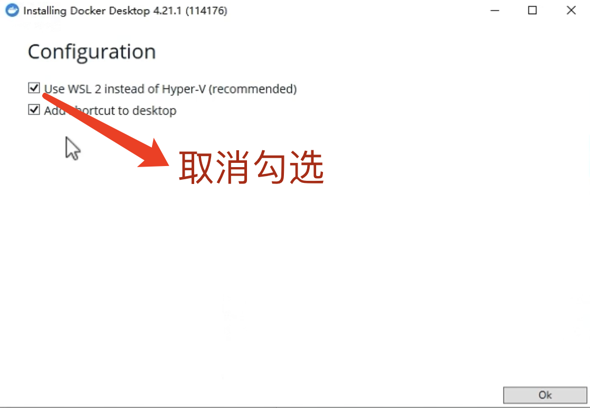
注：如软件安装空间不足，可以把安装路径指向一个新的路径：可以参考这里修改安装路径
用管理员权限打开CMD，然后输入mklink /j "C:\Program Files\Docker" "D:\Program Files\Docker"。这样，软件看似安装在原目录，实则安装在了”D:\Program Files\Docker”。当然也可修改为其他盘。
2.启动Docker服务
安装完Docker Desktop，运行启动它，界面如下所示。 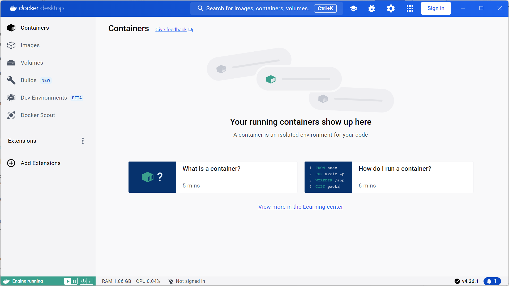 看到左下角显示Engine running说明启动成功。
3.拉取镜像
3.1准备工作：检查磁盘剩余存储空间
首先需要检查电脑系统盘（C盘）空间剩余空间是否超过6GB，实际建议有10GB及以上。如果空间足够，可以跳转到3.2，如空间容器和镜像存储空间不足，旧版本Docker Desktop可以直接在软件中设置新的存储路径，但新版就不行了，下面介绍新版的用法。参考来源：修改存储路径。
1）列出待迁移数据
退出Docker Desktop软件，以防冲突。打开CMD，输入wsl --list -v，把所有相关的数据文件列出来，稍后需要挨个迁移。
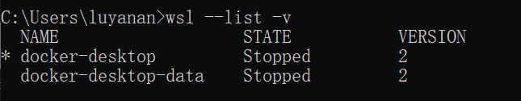
此时，返回的信息是如上图所示，那么需要迁移的数据有：docker-desktop-data STOPPED 2，docker-desktop STOPPED 2。有的只出现一条，那么只要迁移这一个就好。接下来，以把数据迁移到D盘为例进行说明。
2）新建保存目录
在D盘新建目录用于保存迁移过去的数据，例如我后续希望相关数据都迁移到”D:\Program Files\Docker”，那么我就得新建这个目录，保证路径”D:\Program Files\Docker”存在。
3）导出数据
在CMD中输入：wsl --export docker-desktop-data "D:\Program Files\Docker\docker-desktop-data.tar"。如果有其它要导出，指令类似。例如我们还需要导出docker-desktop，那么运行完上一句，继续输入：wsl --export docker-desktop "D:\Program Files\Docker\docker-desktop.tar"。
4）注销WSL中原来的数据
在CMD中输入：wsl --unregister docker-desktop-data。如果有其它要注销，指令类似。例如我们还需要注销docker-desktop，那么运行完上一句，继续输入：wsl --unregister docker-desktop。
5）导入数据到新的存储路径
在CMD中输入：wsl --import docker-desktop-data "D:\Program Files\Docker\data" "D:\Program Files\Docker\docker-desktop-data.tar" --version 2。这里的”D:\Program Files\Docker\data”是新的存储路径，这个文件夹会自动创建。
若还需要迁移docker-desktop，运行完上一句，继续输入：wsl --import docker-desktop "D:\Program Files\Docker\data" "D:\Program Files\Docker\docker-desktop.tar" --version 2。
6）重启Docker Desktop
此时已经完成了容器文件的存储位置迁移。如果有问题，可以尝试重启电脑。如果正常迁移完成，可以删除导出的tar文件，即D:\Program Files\Docker\docker-desktop-data.tar。如需迁移到其他盘，也可参照此方式完成，只需要修改盘符即可。
3.2拉取镜像
Docker分为容器（Container）和镜像（Image），（有时还会额外有一类叫Dockerfile）。首先需要从云端获取镜像，类似于安装操作系统的镜像，这个镜像是和原版一模一样的。然后可以启动容器，容器可以由用户自主修改。
拉取镜像的命令如下：
docker pull xedu/xedu:v3s
打开电脑的命令行（CMD）窗口，输入上面的命令行。
这一步会拉取xedu的镜像文件到本地磁盘，因此务必保证您的电脑系统盘空间剩余空间超过5GB，实际建议有10GB及以上空间，便于后续训练使用。如果想要调整存储空间位置，可以参考上面空间不足的解决办法。刚开始拉取没有相应，可以等待一会儿，就会出现下面的拉取进度的界面。 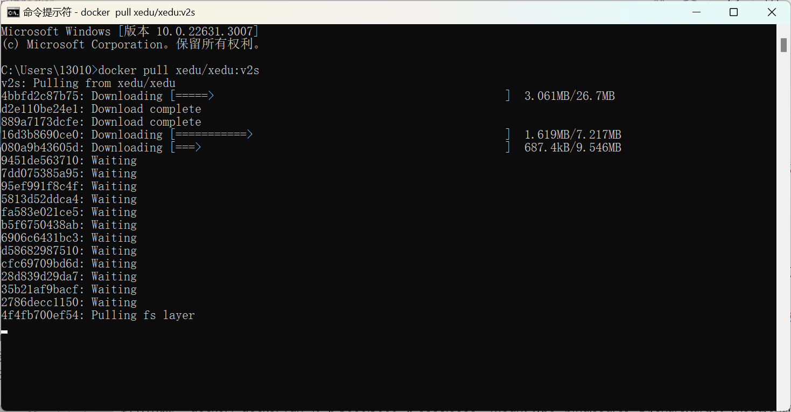
等待拉取完成，所用时间取决于网速（大约30分钟-2小时之间），您也可以参考相关教程配置国内镜像源来加快拉取速度。如：这个办法。
4.启动docker容器（Container）
在CMD输入：
docker run -it -p 5000:5000 -p 8888:8888 --mount type=bind,source=D:/share,target=/xedu/share xedu/xedu:v3s，首次使用会询问是否绑定磁盘，选择Yes。运行成功界面如下：
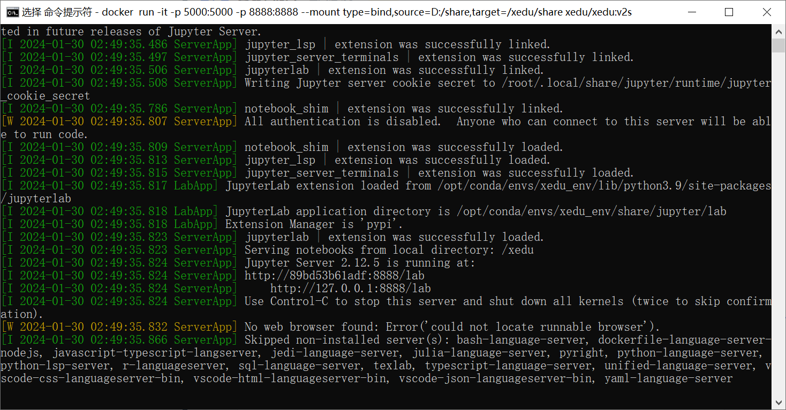
接下来就可以用电脑访问 127.0.0.1:8888 访问jlab，通过 127.0.0.1:5000 访问easytrain。（电脑中的文件想要拷贝进docker，可以放到D盘share文件夹）。美中不足的是，这两个网址需要自行打开浏览器后输入。如果显示效果不佳，可能是浏览器不兼容，建议下载最新版的chrome浏览器。 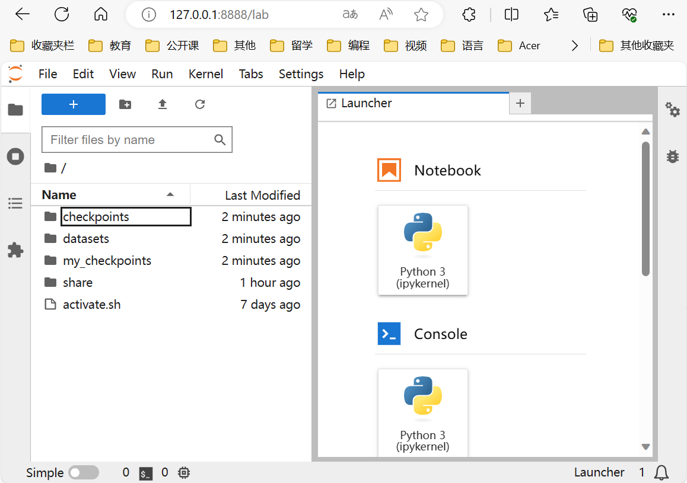 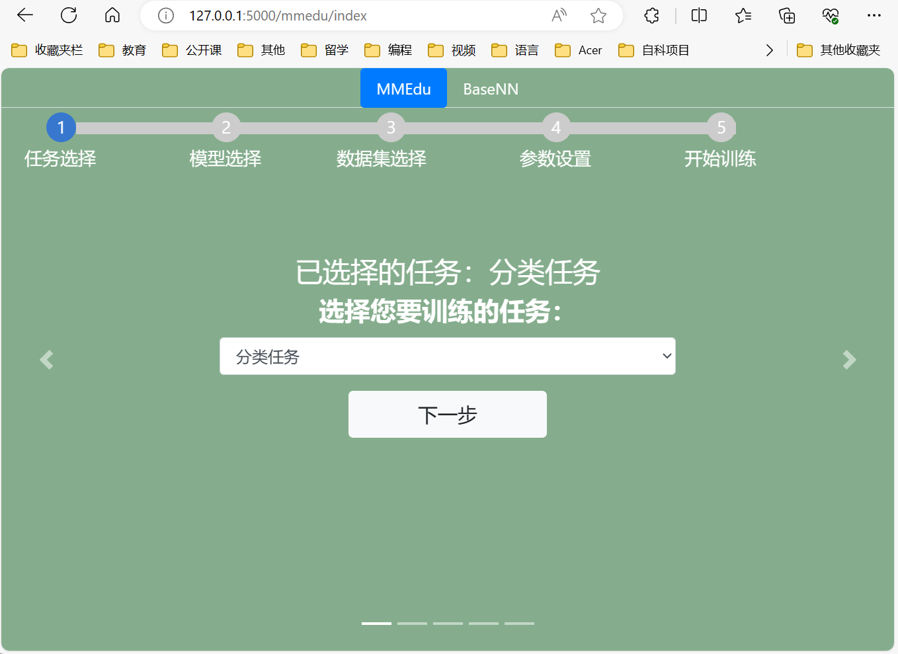
可能用到的docker命令
查看现有的容器
docker ps -a暂停容器
docker stop 34。 假设使用ps查看到容器ID是1234567890，还有另一个容器ID是1243567890，我们在指定的时候，只要输入其中的任意一小段，可以区分开不同的容器即可，例如可以用34或者1234之类来区分这两个不同的容器。再次启动容器
docker start 34进入容器的命令行窗口
docker exec 34 -it bash
5.结束容器
在刚才的命令行窗口中，输入CTRL+C，再输入y，即可结束容器。 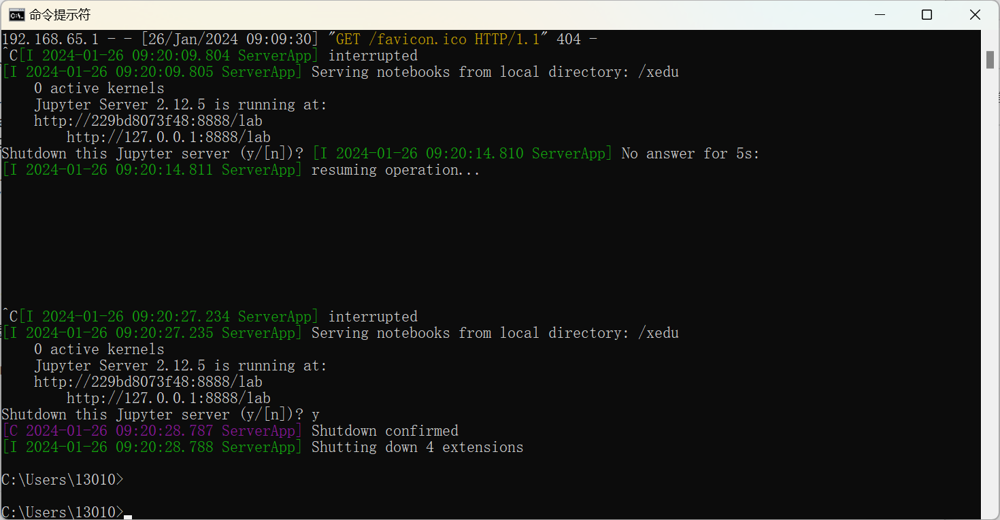
6.重启容器
已完成容器的安装，再次重启容器只需启动Docker服务，再完成5.启动容器的操作即可。
如何快速查看XEdu各模块库的版本
打开python终端，执行以下命令即可查看XEdu各模块库的版本。当前最新版本是0.1.21。
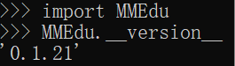
注：目前版本MMEdu仅支持CPU。
如何卸载XEdu各模块库
如果XEdu某模块库出现异常情况，可以尝试使用uninstall命令卸载，然后再使用install命令安装。参考代码：
$ pip uninstall MMEdu -y
$ pip uninstall BaseNN -y
$ pip uninstall BaseML -y